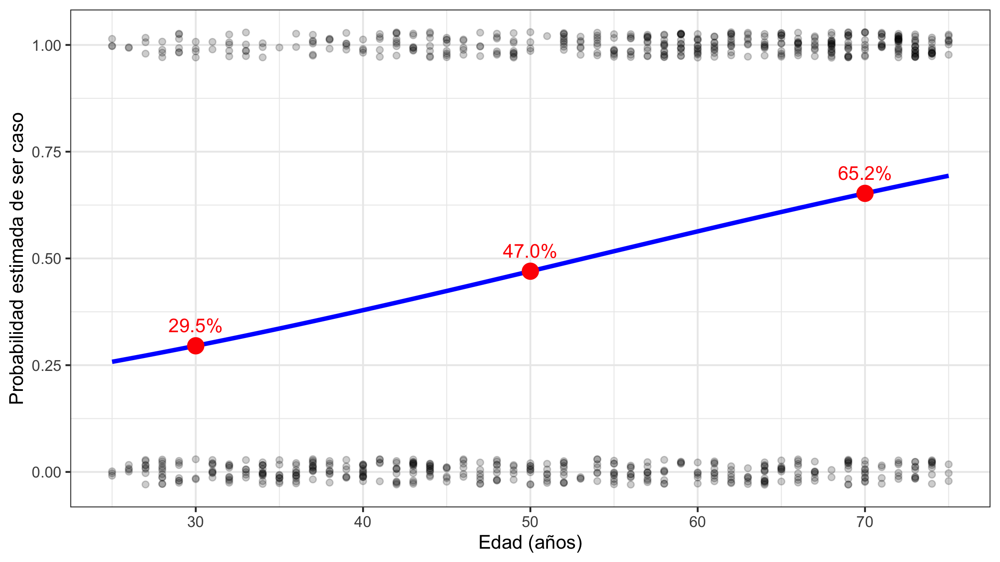
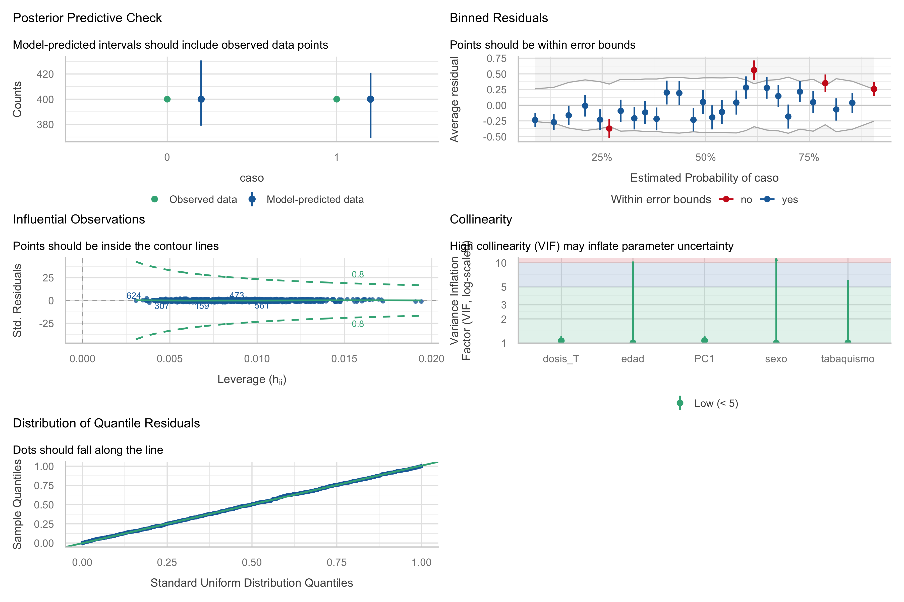
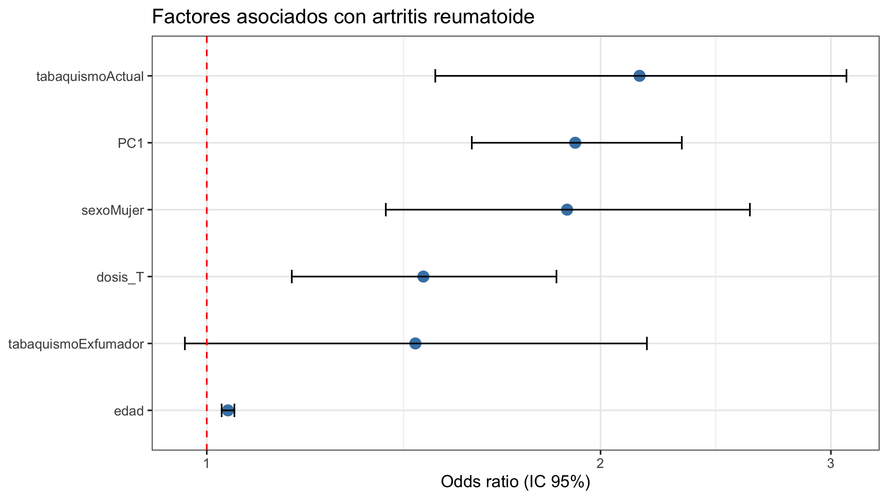

library(gtsummary)
library(MASS)
library(tidyverse)
library(performance)Regresión logística. Parte 2
Gráficos diagnóstico · Prueba de razón de verosimilitudes · Comparación de modelos · Capacidad de predicción del modelo · Presentación de resultados
Edsaúl Emilio Pérez-Guerrero
2026-10-20
Objetivos de la sesión
- Revisión de actividades
- Comprender y evaluar los supuestos que se deben de cumplir en la regresión logístic
- Presentar datos de una regersión logística adecuadamente
Librerías de la sesión
Antes de comenzar
Revisión de la regresión de STAT4 en AR
El siguiente código es para importar y preparar de nuevo la base de datos:
datos <- read.csv("../Bases/estudio_AR_STAT4.csv") # Cambie la ruta, en mi caso necesito moverme una carpeta arriba
# Desenlace: 1 = caso (AR), 0 = control. La categoría "evento" debe ser 1.
datos$caso_f <- factor(datos$caso, levels = c(0, 1), labels = c("Control", "Caso"))
# Los factores deben de estar correctamente etiquetados y en el orden correcto
# Para algunas situaciones se prefiere mantenet 0 y 1
# Factores con su categoría de referencia en primer lugar
datos$sexo <- factor(datos$sexo, levels = c("Hombre", "Mujer"))
datos$tabaquismo <- factor(datos$tabaquismo, levels = c("Nunca", "Exfumador", "Actual"))
datos$rs7574865 <- factor(datos$rs7574865, levels = c("GG", "GT", "TT"))
# Dosis alélica: número de copias del alelo de riesgo T (0, 1, 2)
datos$dosis_T <- as.numeric(datos$rs7574865) - 1
# as.numeric() sobre un factor no devuelve las etiquetas. Devuelve el código interno, es decir, la posición de cada nivel: GG = 1, GT = 2, TT = 3.
# Al restar 1 se obtiene exactamente el número de alelos T:
str(datos[, c("caso", "sexo", "edad", "tabaquismo", "PC1", "rs7574865", "dosis_T")])'data.frame': 800 obs. of 7 variables:
$ caso : int 1 0 0 0 1 1 1 0 0 1 ...
$ sexo : Factor w/ 2 levels "Hombre","Mujer": 2 2 1 1 2 1 2 2 2 2 ...
$ edad : int 49 37 34 54 66 34 59 28 55 69 ...
$ tabaquismo: Factor w/ 3 levels "Nunca","Exfumador",..: 3 2 1 1 2 2 3 3 1 3 ...
$ PC1 : num 1.951 0.189 0.237 -0.754 0.956 ...
$ rs7574865 : Factor w/ 3 levels "GG","GT","TT": 3 1 2 1 2 1 1 1 1 3 ...
$ dosis_T : num 2 0 1 0 1 0 0 0 0 2 ...Revisión de la regresión de STAT4 en AR
Ajuste glm(caso ~ tabaquismo, family = binomial). Interprete cada OR respecto a “Nunca”.
| Characteristic | OR | 95% CI | p-value |
|---|---|---|---|
| tabaquismo | |||
| Nunca | — | — | |
| Exfumador | 1.37 | 0.95, 1.98 | 0.094 |
| Actual | 2.18 | 1.58, 3.03 | <0.001 |
| Abbreviations: CI = Confidence Interval, OR = Odds Ratio | |||
En comparación con los individuos que nunca habían fumado, los fumadores actuales presentaron mayores odds de artritis reumatoide (OR = 2.18; IC del 95%: 1.58–3.00; p < 0.001). Por su parte, los exfumadores también mostraron mayores odds de AR (OR = 1.36; IC del 95%: 0.95–1.97), aunque esta asociación no alcanzó significancia estadística (p = 0.094).
Revisión de la regresión de STAT4 en AR
Calcule la probabilidad predicha de ser caso para una persona de 30, 50 y 70 años con predict(…, type = “response”). ¿Por qué esa probabilidad no es el riesgo poblacional?
Call:
glm(formula = caso ~ edad, family = binomial(link = "logit"),
data = datos)
Coefficients:
Estimate Std. Error z value Pr(>|z|)
(Intercept) -1.99347 0.28996 -6.87 0.0000000000062 ***
edad 0.03747 0.00526 7.12 0.0000000000010 ***
---
Signif. codes: 0 '***' 0.001 '**' 0.01 '*' 0.05 '.' 0.1 ' ' 1
(Dispersion parameter for binomial family taken to be 1)
Null deviance: 1109.0 on 799 degrees of freedom
Residual deviance: 1054.9 on 798 degrees of freedom
AIC: 1059
Number of Fisher Scoring iterations: 4Revisión de la regresión de STAT4 en AR
Calcule la probabilidad predicha de ser caso para una persona de 30, 50 y 70 años con predict(…, type = “response”). ¿Por qué esa probabilidad no es el riesgo poblacional?

Revisión de la regresión de STAT4 en AR
Para el modelo de edad, obtenga el OR por cada 5 años con su IC 95 %.
Call:
glm(formula = caso ~ edad, family = binomial, data = datos)
Coefficients:
Estimate Std. Error z value Pr(>|z|)
(Intercept) -1.99347 0.28996 -6.87 0.0000000000062 ***
edad 0.03747 0.00526 7.12 0.0000000000010 ***
---
Signif. codes: 0 '***' 0.001 '**' 0.01 '*' 0.05 '.' 0.1 ' ' 1
(Dispersion parameter for binomial family taken to be 1)
Null deviance: 1109.0 on 799 degrees of freedom
Residual deviance: 1054.9 on 798 degrees of freedom
AIC: 1059
Number of Fisher Scoring iterations: 4Revisión de la regresión de STAT4 en AR
Utilice los algoritmos step para encontrar un modelo en el que identifique factores asociados a la AR. Ajuste por todas las variables de la base.
Revisión de la regresión de STAT4 en AR
Utilice los algoritmos step para encontrar un modelo en el que identifique factores asociados a la AR. Ajuste por todas las variables de la base.
| Characteristic | OR | 95% CI | p-value |
|---|---|---|---|
| sexo | |||
| Hombre | — | — | |
| Mujer | 1.85 | 1.32, 2.59 | <0.001 |
| edad | 1.05 | 1.03, 1.06 | <0.001 |
| tabaquismo | |||
| Nunca | — | — | |
| Exfumador | 1.57 | 1.03, 2.42 | 0.039 |
| Actual | 2.26 | 1.55, 3.32 | <0.001 |
| ancestria | 23.2 | 10.4, 53.0 | <0.001 |
| var_rara | 24,047,480 | 0.00, |
>0.9 |
| SNP01 | 1.40 | 0.94, 2.09 | 0.10 |
| SNP03 | 1.57 | 1.13, 2.17 | 0.007 |
| SNP06 | 0.78 | 0.58, 1.05 | 0.11 |
| SNP11 | 0.60 | 0.46, 0.78 | <0.001 |
| SNP14 | 0.83 | 0.65, 1.06 | 0.14 |
| SNP17 | 0.80 | 0.63, 1.01 | 0.059 |
| SNP18 | 0.80 | 0.64, 1.01 | 0.064 |
| dosis_T | 1.45 | 1.13, 1.85 | 0.003 |
| Abbreviations: CI = Confidence Interval, OR = Odds Ratio | |||
Revisión de la regresión de los factores asociados a la HT
su turno
Evaluación y diagnóstico del modelo
Datos y modelo de trabajo
Para esta sesión vamos a utilizar el siguiente modelo:
datos <- read.csv("../Bases/estudio_AR_STAT4.csv")
datos$sexo <- factor(datos$sexo, levels = c("Hombre", "Mujer"))
datos$tabaquismo <- factor(datos$tabaquismo, levels = c("Nunca", "Exfumador", "Actual"))
datos$rs7574865 <- factor(datos$rs7574865, levels = c("GG", "GT", "TT"))
datos$dosis_T <- as.numeric(datos$rs7574865) - 1
# Modelo final de la Parte 2: aditivo, ajustado por sexo, edad, tabaquismo y PC1
m_final <- glm(caso ~ dosis_T + sexo + edad + tabaquismo + PC1,
data = datos, family = binomial)PC1: es una variable ficticia simulada para evaluar la colinealidad. En la práctica no tiene sentido incluir una variable de una PC y las variables con las se estimó el PC.
Supuestos de la regresión logística
- Variable dependiente binaria. La variable respuesta debe tener dos categorías (por ejemplo, caso y control), ya que el modelo estima la probabilidad de uno de estos eventos. No es necesario evaluar si se hace una regresión para una variable bianaria. NO
- Independencia de las observaciones. Las observaciones deben ser independientes entre sí para obtener errores estándar e inferencias estadísticas válidas. No se evalúa, depende del diseño del estudio. NO
- Linealidad en el logit. Las variables independientes continuas deben tener una relación aproximadamente lineal con el logaritmo de las odds (logit). Se puede evaluar gráficamente y mediante la intrudicción de términos al cuadrado. SI, PLOTS y SPLINE METHOD
- Ausencia de multicolinealidad. Las variables independientes no deben ser combinaciones lineales de otras variables, porque esto impide estimar sus coeficientes de manera única. Una multicolinealidad elevada también puede producir estimaciones inestables. SI, CHECK_MODEL
Supuestos de la regresión logística
- Ausencia de separación completa o cuasicompleta. Ninguna variable o combinación de variables debe separar perfectamente los casos de los controles, porque esto puede impedir obtener estimaciones finitas mediante máxima verosimilitud. SI, SUMMARY Y TABLAS DE LOS TÉRMINOS
- Tamaño de muestra e información suficientes. Debe existir suficiente información sobre casos y controles en relación con la complejidad del modelo para obtener estimaciones estables y evitar el sobreajuste. NO, DEPENDE DEL CONTEXTO
- Especificación adecuada del modelo. El modelo debe representar razonablemente las relaciones entre las variables, incluyendo posibles efectos no lineales e interacciones relevantes, para evitar estimaciones distorsionadas. En pocas palabras, un modelo adecuado. SI, CUANDO SE CONSTRUYE EL MODELO
Panorama general con check_model()
No evalúa todos los supuestos pero permite obtener una visión general sobre el modelo, quizá más de lo que necesitamos (sarcasmo).
Panorama general con check_model()

¿Cómo leer check_model() en regresión logística?
- Posterior predictive check: las predicciones del modelo deben reproducir la proporción observada de 0 y 1.
- Binned residuals: residuos promedio por grupos de probabilidad predicha; ≈ 95 % deben caer dentro de las bandas de error (Gelman y Hill 2007).
- Influential observations: puntos fuera de las líneas de contorno de Cook son influyentes.
- Collinearity: VIF de cada predictor.
- Uniformity of residuals: residuos cuantílicos simulados; deben seguir la diagonal (Lüdecke et al. 2021).
Linealidad entre predictores continuos y log-odds
# Logit empírico por deciles de edad: si es lineal, los puntos siguen una recta
datos$decil_edad <- cut(datos$edad, quantile(datos$edad, seq(0, 1, 0.1)), include.lowest = TRUE)
lin <- aggregate(cbind(edad, caso) ~ decil_edad, data = datos, FUN = mean)
lin$logit <- log(lin$caso / (1 - lin$caso))
ggplot(lin, aes(edad, logit)) + geom_point(size = 3, col = azul) +
geom_smooth(method = "lm", se = FALSE, col = rojo) +
labs(x = "Edad (media del decil)", y = "logit empírico de AR")
Prueba formal: ¿mejora un término no lineal?
- El gráfico anterior solo es un método empirico
- Otra alternativa es probar si variables no lineales mejoran el modelo
- Si introducir al modelo una variable no lineal mejora, tendremos evidencia de que no hay relación lineal
- Estos métodos se basan en el supuesto de que si la relación de la variables es constante no debería haber cambios.
Analysis of Deviance Table
Model 1: caso ~ dosis_T + sexo + edad + tabaquismo + PC1
Model 2: caso ~ dosis_T + sexo + edad + I(edad^2) + tabaquismo + PC1
Resid. Df Resid. Dev Df Deviance Pr(>Chi)
1 793 928
2 792 928 1 0.0000248 1- Si el término cuadrático (o un spline) no mejora el ajuste → se acepta la linealidad en el logit.
- Si no es lineal: transformar (log, polinomio, splines) o categorizar con dummy (Celis de la Rosa y Labrada Martagón 2014) (Hosmer, Lemeshow, y Sturdivant 2013; Pérez Guerrero 2024).
Otra alternativa es utilizar los spline
- Un spline es una función matemática que permite representar relaciones no lineales mediante segmentos de funciones polinómicas conectados suavemente.
- Agrega múltiples rectas
- ns() significa natural cubic splines.
- edad es la variable continua.
- df = 4 especifica cuatro grados de libertad para representar su relación con el logit.
Luego se comparan los modelos
Otra alternativa es utilizar los spline
Analysis of Deviance Table
Model 1: caso ~ edad
Model 2: caso ~ ns(edad, df = 4)
Resid. Df Resid. Dev Df Deviance Pr(>Chi)
1 798 1055
2 795 1052 3 3.1 0.38Así se ve una violación de linealidad de forma gráfica

Multicolinealidad entre predictores
Se puede evaluar desde el check_model, este es un ejemplo de lo que podría pasar con una alta colinealidad:
PC1 y la proporción de ancestría miden casi lo mismo (r = 0.96). ¿Qué pasa si incluimos ambas?
# Check for Multicollinearity
Low Correlation
Term VIF VIF 95% CI adj. VIF Tolerance Tolerance 95% CI
dosis_T 1.08 [ 1.03, 1.22] 1.04 0.92 [0.82, 0.97]
sexo 1.00 [ 1.00, Inf] 1.00 1.00 [0.00, 1.00]
edad 1.01 [ 1.00, 3.74] 1.01 0.99 [0.27, 1.00]
tabaquismo 1.01 [ 1.00, 3.54] 1.00 0.99 [0.28, 1.00]
High Correlation
Term VIF VIF 95% CI adj. VIF Tolerance Tolerance 95% CI
PC1 11.72 [10.29, 13.37] 3.42 0.09 [0.07, 0.10]
ancestria 11.88 [10.43, 13.56] 3.45 0.08 [0.07, 0.10]Consecuencias de la colinealidad
modelo term estimate std.error p.value
1 Solo PC1 PC1 0.6486 0.0942 0.000000000005782
2 PC1 + ancestría PC1 -0.1335 0.3117 0.668476151190942# Check for Multicollinearity
Low Correlation
Term VIF VIF 95% CI adj. VIF Tolerance Tolerance 95% CI
dosis_T 1.07 [1.02, 1.21] 1.03 0.93 [0.82, 0.98]
sexo 1.00 [1.00, Inf] 1.00 1.00 [0.00, 1.00]
edad 1.01 [1.00, 10.38] 1.01 0.99 [0.10, 1.00]
tabaquismo 1.01 [1.00, 6.15] 1.00 0.99 [0.16, 1.00]
PC1 1.07 [1.03, 1.21] 1.04 0.93 [0.82, 0.98]- El coeficiente de PC1 cambia de signo y su EE se multiplica: no es posible separar dos variables casi idénticas.
- VIF > 5–10 suele indicar problema, aunque son puntos de corte orientativos (O’Brien 2007). Solución: conservar una de las variables.
Separación completa y cuasicompleta
Ocurre cuando un predictor (o combinación) separa perfectamente casos de controles (Heinze y Schemper 2002). Las variables con pocos conteos tienden a comportarse así.
Este es un ejemplo, utilizando la variable rara de la base datos
Caso
Variante_rara 0 1
0 400 393
1 0 7 Estimate Std. Error z value Pr(>|z|)
16.8739 516.0436 0.0327 0.9739 - Todos los portadores de la variante rara son casos (celda con 0) → el OR “tiende a infinito”.
- Señales: \(\beta\) gigantes (> 10).
¿Qué hacer ante separación?
- No eliminar la variable solo por eso: es probablemente un efecto fuerte.
- Regresión logística penalizada de Firth: estimaciones finitas y con menor sesgo en muestras pequeñas (Firth 1993; Heinze y Schemper 2002).
- Agrupar categorías raras (p. ej., modelo dominante en lugar de genotípico), regresión logística exacta o métodos bayesianos.
Codigo de ejemplo:
Residuos agrupados (binned residuals) de check model
Warning: About 86% of the residuals are inside the error bounds (~95% or higher would be good).
Interpretación de los residuos agrupados
En un modelo correctamente especificado, esperamos que:
- Los residuos promedio estén próximos a cero.
- No exista una tendencia sistemática ascendente o descendente.
- Aproximadamente el 95% de los puntos se encuentre dentro de los límites de referencia (Gelman y Hill 2007; Lüdecke et al. 2021).
- Aquí ≈ 86 % de los grupos cae dentro de las bandas (lo ideal es ≥ 95 %): señal de desajuste moderado.
Un diagnóstico “imperfecto” no invalida automáticamente el OR del SNP, pero obliga a investigar: ¿variables omitidas?, ¿términos no lineales?, ¿interacciones?
Observaciones influyentes
OK: No outliers detected.
- Based on the following method and threshold: cook (0.8).
- For variable: (Whole model) id caso rs7574865 sexo edad tabaquismo
159 ID159 0 GT Hombre 75 Actual
307 ID307 0 TT Mujer 75 Actual
624 ID624 1 GG Hombre 27 Nunca
561 ID561 0 GG Mujer 58 Actual
473 ID473 0 GG Mujer 67 ActualUna observación influyente no se elimina por defecto: se revisa (¿error de captura o genotipificación?) y se evalúa si las conclusiones cambian sin ella (análisis de sensibilidad).
Comparación de modelos
Interacción, confusión
Se evaluan e interpretan de forma similar a la regresión lineal
la principal diferencia es que en la regresión logística las interacciones son aditivas en la escala del logit, pero multiplicativas en la escala de los odds ratios (OR).
::: La asociación entre obesidad e hipertensión depende del tabaquismo. Entre los no fumadores, la obesidad se asocia con un OR de 2.00, mientras que entre los fumadores el OR correspondiente es de 4.00. Por tanto, el OR asociado con obesidad es dos veces mayor entre fumadores que entre no fumadores :::
Interpretación de los coeficientes de interacción
Ejemplo: Asociación entre obesidad, tabaquismo e hipertensión arterial (HTA).
\[ \operatorname{logit}(p)= \beta_0+\beta_1(\text{Obesidad})+ \beta_2(\text{Tabaquismo})+ \beta_3(\text{Obesidad}\times\text{Tabaquismo}) \]
Resultados hipotéticos:
| Variable | Coeficiente (β) | OR = exp(β) |
|---|---|---|
| Intercepto | -2.00 | 0.14 |
| Obesidad | 0.69 | 2.00 |
| Tabaquismo | 0.41 | 1.51 |
| Obesidad × Tabaquismo | 0.69 | 2.00 |
Interpretación:
- Obesidad: Entre no fumadores, las odds de HTA son 2 veces mayores en personas con obesidad.
- Tabaquismo: Entre personas sin obesidad, las odds de HTA son 1.51 veces mayores en fumadores.
- Interacción: El OR de obesidad es 2 veces mayor entre fumadores que entre no fumadores.
Nota
Los efectos principales se interpretan en el nivel de referencia de la otra variable.
¿Por qué la interacción es multiplicativa?
En regresión logística, los coeficientes se suman en la escala del logit, pero los OR se multiplican.
\[ OR=e^{\beta_1+\beta_2+\beta_3} =e^{\beta_1}\times e^{\beta_2}\times e^{\beta_3} \]
Comparación de las cuatro combinaciones:
| Obesidad | Tabaquismo | OR respecto al grupo de referencia |
|---|---|---|
| No | No | 1.00 |
| Sí | No | 2.00 |
| No | Sí | 1.51 |
| Sí | Sí | 6.04 |
Cálculo para personas con obesidad y tabaquismo:
\[ OR=2.00\times1.51\times2.00=\boxed{6.04} \]
Tip
Interpretación: Las personas con obesidad que fuman presentan odds de HTA aproximadamente 6 veces mayores que las personas sin obesidad que no fuman.
Importante: El OR de interacción (2.00) no es el OR conjunto (6.04).
¿Qué sucede si no existe interacción?
En regresión logística, en ausencia de interacción, los OR se multiplican, no se suman.
Supongamos que:
- OR de obesidad = 2.00
- OR de tabaquismo = 1.51
- OR de interacción = 2.00
| Condición | Sin interacción | Con interacción |
|---|---|---|
| Sin obesidad y sin tabaquismo | 1.00 | 1.00 |
| Solo obesidad | 2.00 | 2.00 |
| Solo tabaquismo | 1.51 | 1.51 |
| Obesidad + tabaquismo | 3.02 | 6.04 |
Sin interacción
\[ OR=2\times1.51=\boxed{3.02} \]
Con interacción
\[ OR=2\times1.51\times2=\boxed{6.04} \]
Nota
La ausencia de interacción significa que el efecto conjunto es multiplicativo en la escala de los OR.
Comparación de modelos
- La comparación de modelos sigue los mismos principios que revisamos en regresión lineal.
- Se puede usar AIC y BIC, una pseudo R2
\[AIC = -2\ln L + 2k \qquad BIC = -2\ln L + k\ln(n)\]
datos$dominante <- ifelse(datos$dosis_T >= 1, 1, 0)
datos$recesivo <- ifelse(datos$dosis_T == 2, 1, 0)
m_dom <- glm(caso ~ dominante + sexo + edad + tabaquismo + PC1, data = datos, family = binomial)
m_rec <- glm(caso ~ recesivo + sexo + edad + tabaquismo + PC1, data = datos, family = binomial)
m_gen <- glm(caso ~ rs7574865 + sexo + edad + tabaquismo + PC1, data = datos, family = binomial)
compare_performance(m_final, m_dom, m_rec, m_gen, metrics = c("AIC", "BIC", "R2"))# Comparison of Model Performance Indices
Name | Model | AIC (weights) | BIC (weights) | Tjur's R2
-----------------------------------------------------------
m_final | glm | 941.9 (0.521) | 974.7 (0.670) | 0.209
m_dom | glm | 946.5 (0.054) | 979.3 (0.069) | 0.204
m_rec | glm | 944.1 (0.179) | 976.8 (0.230) | 0.207
m_gen | glm | 943.4 (0.246) | 980.9 (0.030) | 0.209Comparación de modelos
- Menor AIC/BIC = mejor balance entre ajuste y complejidad. Diferencias < 2 son poco relevantes (Burnham y Anderson 2002).
- BIC penaliza más los parámetros (favorece modelos simples). Sirven también para modelos no anidados.
- \(R^2\) en logística: pseudo-\(R^2\) (Tjur, Nagelkerke); no se interpretan como en regresión lineal (Tjur 2009).
- “Unlike traditional R², pseudo R-squared values do not represent the exact proportion of”explained variance”. Instead, they typically evaluate the improvement of a fitted model’s log-likelihood over a null model (intercept-only)” Hemmert et al. (2018)
Presentación de resultados
Presentación de tablas de regresión logística
Se sugiere incluir tablas:
- Variables
- OR
- IC
- Valores de \(p\)
- Deben especificarse las categorías de referencia
- Las unidades de las variables continuas
- las covariables incluidas en el modelo ajustado.
Si tiene un modelo ajustado incluya las variables sin ajustar en un tabla y en otra (o parte de la misma) incluya el modelo ajustado.
gtsummary puede ayudar con la presentación de los resultados.
Presentación de tablas de una regresión logística
Tabla 1. Factores asociados con artritis reumatoide
| Variable | OR crudo (IC 95%) | p | OR ajustado (IC 95%) | p |
|---|---|---|---|---|
| Edad (5 años) | 1.18 (1.10–1.27) | <0.001 | 1.12 (1.03–1.22) | 0.008 |
| Sexo | ||||
| Hombre | Ref. | — | Ref. | — |
| Mujer | 2.10 (1.55–2.85) | <0.001 | 1.85 (1.32–2.59) | <0.001 |
| Tabaquismo | ||||
| Nunca | Ref. | — | Ref. | — |
| Exfumador | 1.45 (1.02–2.06) | 0.038 | 1.28 (0.87–1.88) | 0.210 |
| Actual | 2.65 (1.85–3.80) | <0.001 | 2.18 (1.48–3.21) | <0.001 |
| Ancestría (0.1 unidades) | 1.15 (1.06–1.25) | 0.001 | 1.09 (0.99–1.20) | 0.078 |
Nota
Datos hipotéticos. OR: odds ratio; IC: intervalo de confianza.
Los OR crudos se obtuvieron mediante modelos univariables. Los OR ajustados provienen de un modelo multivariable que incluye todas las variables presentadas.
Forest plot
ggplot(
resultados,
aes(x = estimate, y = reorder(term, estimate))
) +
geom_point(size = 3, color = "steelblue") +
geom_errorbarh(
aes(xmin = conf.low, xmax = conf.high),
height = 0.2
) +
geom_vline(
xintercept = 1,
linetype = "dashed",
color = "red"
) +
scale_x_log10() +
labs(
x = "Odds ratio (IC 95%)",
y = NULL,
title = "Factores asociados con artritis reumatoide"
) +
theme_bw()Forest plot

Actividades
- Utilice la función chek_model para evaluar el modelo final de la base de datos sal.
- Utilizando los resultados de las regresiones para la base de datos sal y para la base de datos STAT4 construya una tabla con su modelo (ajustado y sin ajustar) y un forest plot
Referencias
Burnham, Kenneth P., y David R. Anderson. 2002. Model Selection and Multimodel Inference: A Practical Information-Theoretic Approach. 2.ª ed. New York: Springer.
Celis de la Rosa, Alfredo de Jesús, y Vanessa Labrada Martagón. 2014. «Análisis estratificado y regresión logística». En Bioestadística, 3.ª ed., 209-30. Ciudad de México: El Manual Moderno.
Firth, David. 1993. «Bias Reduction of Maximum Likelihood Estimates». Biometrika 80 (1): 27-38. https://doi.org/10.1093/biomet/80.1.27.
Gelman, Andrew, y Jennifer Hill. 2007. Data Analysis Using Regression and Multilevel/Hierarchical Models. Cambridge: Cambridge University Press.
Heinze, Georg, y Michael Schemper. 2002. «A Solution to the Problem of Separation in Logistic Regression». Statistics in Medicine 21 (16): 2409-19. https://doi.org/10.1002/sim.1047.
Hemmert, Giselmar A. J., Laura M. Schons, Jan Wieseke, y Heiko Schimmelpfennig. 2018. «Log-likelihood-based Pseudo-R2 in Logistic Regression: Deriving Sample-sensitive Benchmarks». Sociological Methods & Research 47 (3): 507-31. https://doi.org/10.1177/0049124116638107.
Hosmer, David W., Stanley Lemeshow, y Rodney X. Sturdivant. 2013. Applied Logistic Regression. 3.ª ed. Hoboken, NJ: John Wiley & Sons. https://doi.org/10.1002/9781118548387.
Lüdecke, Daniel, Mattan S. Ben-Shachar, Indrajeet Patil, Philip Waggoner, y Dominique Makowski. 2021. «performance: An R Package for Assessment, Comparison and Testing of Statistical Models». Journal of Open Source Software 6 (60): 3139. https://doi.org/10.21105/joss.03139.
O’Brien, Robert M. 2007. «A Caution Regarding Rules of Thumb for Variance Inflation Factors». Quality & Quantity 41 (5): 673-90. https://doi.org/10.1007/s11135-006-9018-6.
Pérez Guerrero, Edsaúl Emilio. 2024. Bioestadística en R para ciencias de la salud: Guía práctica. 1.ª ed. Zapopan, Jalisco, México: Editorial Innovación Educativa. https://www.cucs.udg.mx/libros/lectura_cucs.php?libro=Bioestadistica_enR_digital.
Tjur, Tue. 2009. «Coefficients of Determination in Logistic Regression Models—A New Proposal: The Coefficient of Discrimination». The American Statistician 63 (4): 366-72. https://doi.org/10.1198/tast.2009.08210.
Bioestadística con R · Regresión logística — Parte 2